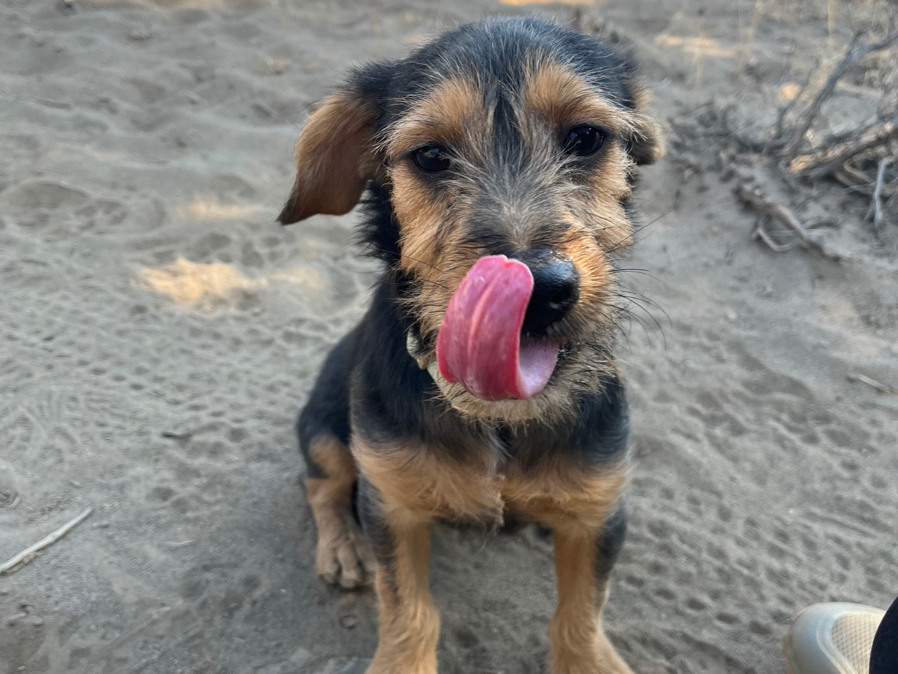

SawyerSawyer couldn't find that page.
That page doesn't exist or may have moved.
Even the best nose loses a trail sometimes — head back to the toolkit.
Or jump to a tool

Sawyer
That page doesn't exist or may have moved.
Even the best nose loses a trail sometimes — head back to the toolkit.
Or jump to a tool